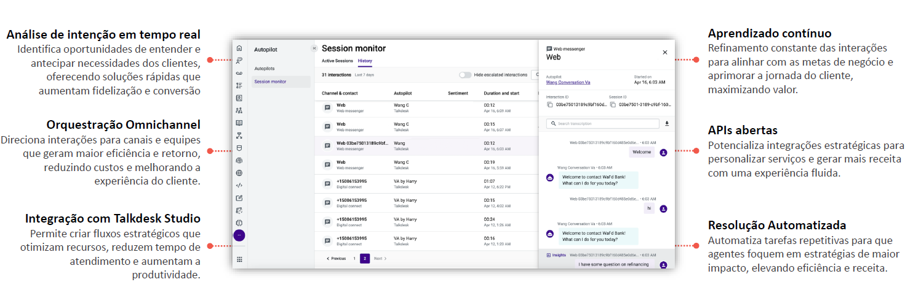

O Autopilot é um assistente virtual com inteligência artificial que resolve demandas dos clientes de forma autônoma e eficiente, com uma experiência semelhante à humana.
Detecta automaticamente a intenção do cliente sem necessidade de menus complexos de IVR.
Roteia chamadas, chats e mensagens para agentes ou fluxos automatizados adequados.
Permite configurar fluxos personalizados para direcionamento e autoatendimento.
Ajusta automaticamente respostas e fluxos com base nas interações anteriores.
Facilita integração com CRMs, sistemas de tickets e outras plataformas.
Utiliza bots para lidar com solicitações repetitivas, reduzindo carga dos agentes.
Se diferencia no mercado por sua integração nativa com o Talkdesk CX Cloud, IA proprietária com aprendizado contínuo, e suporte omnichannel fluido (voz, chat e mensageria).
Além disso, oferece transferências inteligentes com contexto, equilibrando automação e atendimento humano para uma experiência mais natural.
Sua configuração é intuitiva, sem necessidade de código, garantindo implementação rápida e personalização flexível.
O resultado é mais eficiência, redução de custos e melhor experiência para clientes e agentes.